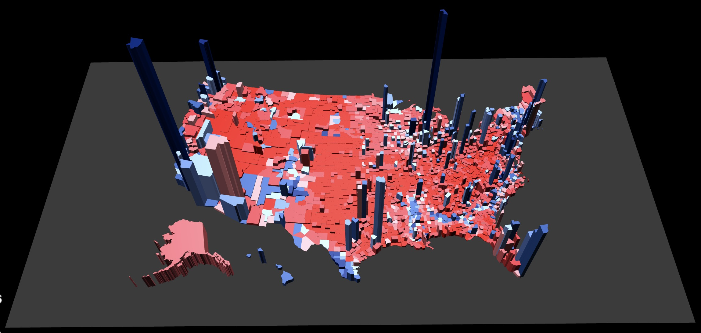
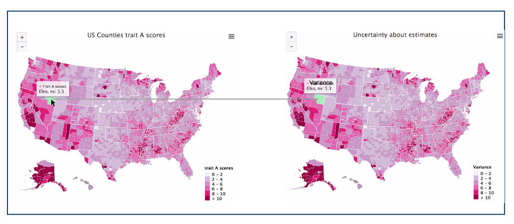
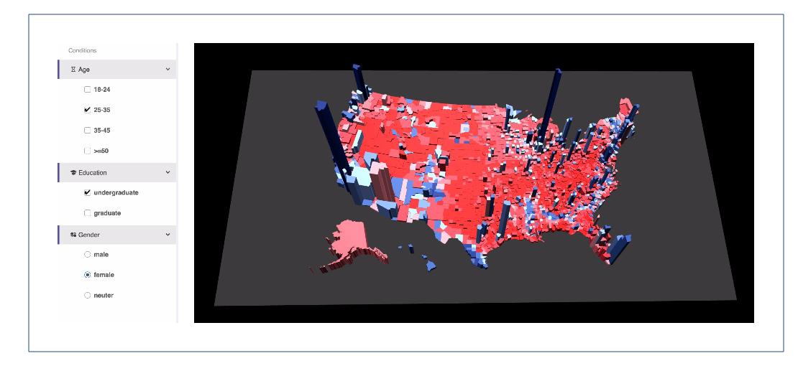
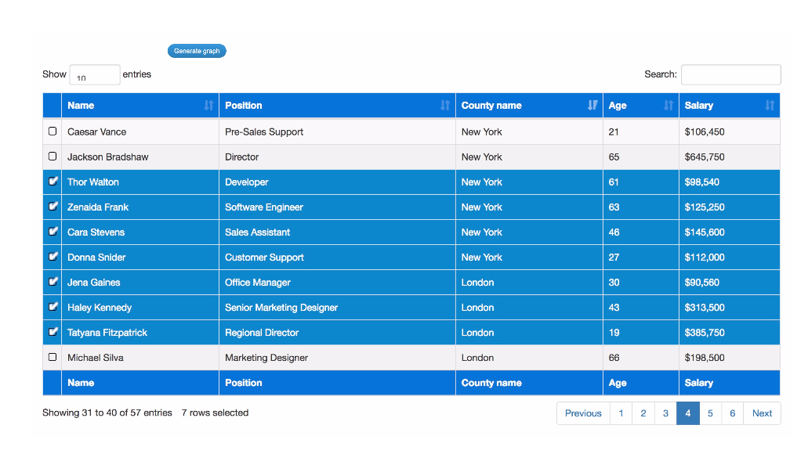
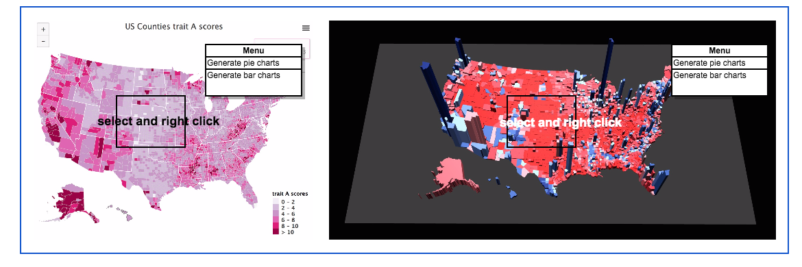
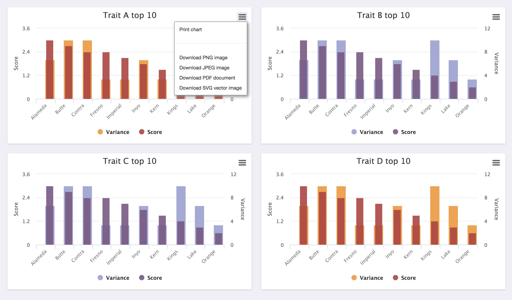
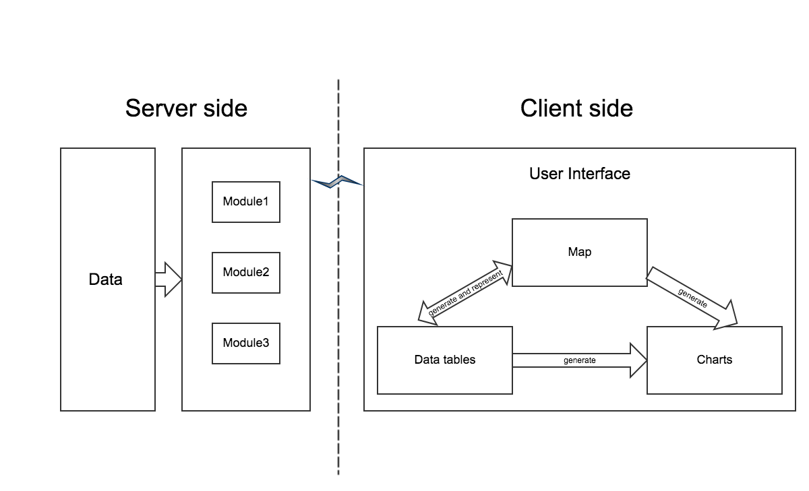

Data visualization proposal
Created by Zhao Chang / @ChiaoGeek
Outlines
- Problems and solutions
- System architecture
- System demo
Problems and solutions
The project description gives five main problems and I find some solutions to them.
Problem 1
Visualizing the spatial distribution of marginal scores and expressing uncertainty about these estimates
Solution 1

Solution 1

Problem 2
Visualizing whichever joint scores the users are interested in
Solution 2

Problem 3
Displaying static data (raw data) tables and using them to generate all kinds of graphs
Solution 3

Problem 4
Generating secondary graphs and tables of the data underlying the map
Solution 4

Problem 5
Saving results directly from the website
Solution 5

Other principles
- Dynamic and interactive
- A high dgree of user-end control
- Pretty, professional, modern
- Uncluttered and intuitive
- Simple-to-use visualization tool
- Flexible and powerful
- Aesthetics and user experience
System Architecture

System demo
THE END
Thank you